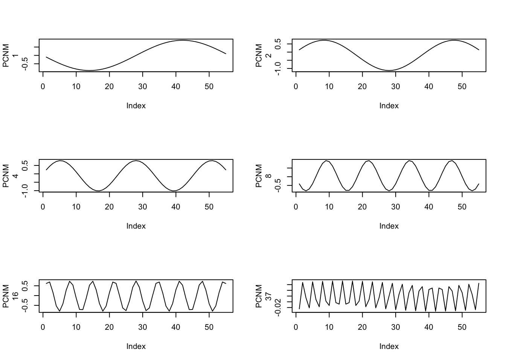
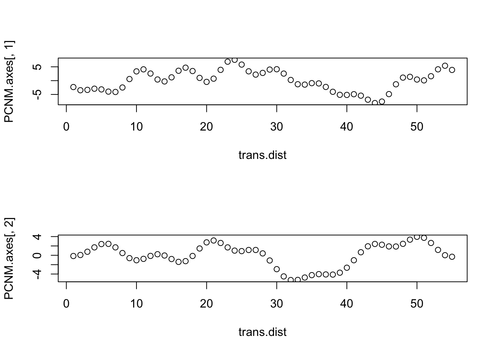
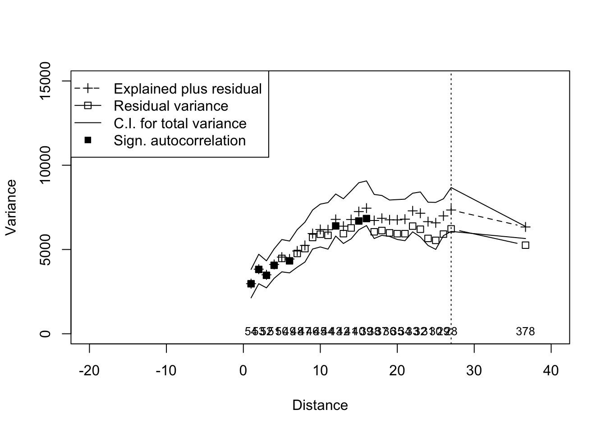
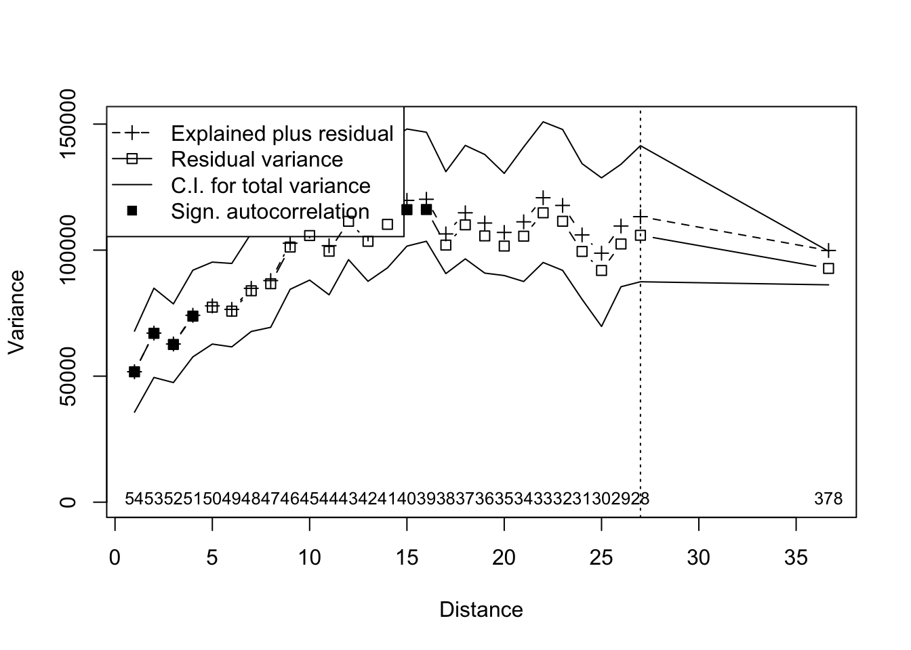

Assigned Reading:
Chapter 7 from: Borcard, D., Gillet, F. and Legendre, P. 2011. Numerical Ecology with R. Springer. link
Two ordination-based approaches to modeling spatial structure:
\[W[i,j] = \begin{cases} 0 & \text{if $i$ and $j$ are not connected} \\ w_{i,j} & \text{if $i$ and $j$ are connected} \end{cases}\]
Note: How \(W\) is defined can have a strong effect on results, so if you don’t have a strong biologically motivated way to construct \(W\) be sure to do some sensitivity analyses and determine which way of defining \(W\) is best. The spdep packages has many ways to define connectivity and neighbor matrices (some examples: Delaunay triangulation, \(k\)-nearest neighbors, minimum spanning tree, neighbors within \(d\) distance)
A list of papers that might be useful:
Legendre and Gauthier 2014. Statistical methods for temporal and space–time analysis of community composition. Proc. R. Soc. B. DOI: 10.1098/rspb.2013.2728
Wagner 2013. Rethinking the linear regression model for spatial ecological data. Ecology. DOI: 10.1890/12-1899.1 Describes a method called “spatial component regression”.
First, let’s get the data:
library(vegan)## Loading required package: permute## Loading required package: lattice## This is vegan 2.4-4library(adespatial)## Warning: namespace 'DBI' is not available and has been replaced
## by .GlobalEnv when processing object 'call.'
## Warning: namespace 'DBI' is not available and has been replaced
## by .GlobalEnv when processing object 'call.'
## Warning: namespace 'DBI' is not available and has been replaced
## by .GlobalEnv when processing object 'call.'
## Warning: namespace 'DBI' is not available and has been replaced
## by .GlobalEnv when processing object 'call.'
## Warning: namespace 'DBI' is not available and has been replaced
## by .GlobalEnv when processing object 'call.'
## Warning: namespace 'DBI' is not available and has been replaced
## by .GlobalEnv when processing object 'call.'
## Warning: namespace 'DBI' is not available and has been replaced
## by .GlobalEnv when processing object 'call.'
## Warning: namespace 'DBI' is not available and has been replaced
## by .GlobalEnv when processing object 'call.'
## Warning: namespace 'DBI' is not available and has been replaced
## by .GlobalEnv when processing object 'call.'
## Warning: namespace 'DBI' is not available and has been replaced
## by .GlobalEnv when processing object 'call.'
## Warning: namespace 'DBI' is not available and has been replaced
## by .GlobalEnv when processing object 'call.'library(ade4)##
## Attaching package: 'ade4'## The following object is masked from 'package:adespatial':
##
## multispatisource("sr.value.R") # from https://raw.githubusercontent.com/JoeyBernhardt/NumericalEcology/master/sr.value.R
# Data converted to semi-quantitative
data <- cbind(c(1, 1, 0, 0, 0, 1, 0, 0, 0, 0, 0, 0, 0, 0, 0, 0, 0, 2, 0, 0, 1, 0, 0, 0, 0, 0, 0, 0, 0, 0, 100, 100, 30, 100, 100, 100, 100, 100, 100, 76, 3, 76, 1, 0, 75, 76, 0, 1, 0, 0, 1, 0, 0, 0, 0), c(75, 0, 0, 30, 0, 0, 0, 0, 0, 0, 0, 0, 0, 75, 0, 0, 0, 0, 0, 0, 0, 0, 0, 0, 0, 0, 0, 0, 0, 0, 0, 0, 0, 0, 0, 0, 0, 75, 1, 1, 2, 2, 0, 0, 0, 0, 100, 75, 1, 2, 0, 0, 0, 0, 0), c(0, 0, 0, 0, 0, 0, 0, 0, 0, 0, 0, 0, 0, 0, 0, 0, 0, 0, 1, 0, 0, 0, 0, 0, 0, 0, 0, 0, 0, 0, 30, 0, 75, 0, 0, 0, 0, 0, 0, 0, 0, 1, 0, 0, 0, 0, 0, 0, 0, 0, 0, 0, 0, 0, 0), c(0, 75, 0, 0, 75, 1, 0, 77, 75, 75, 75, 2, 100, 2, 100, 100, 100, 30, 30, 77, 100, 100, 100, 100, 100, 100, 77, 100, 75, 77, 31, 0, 30, 76, 30, 1, 0, 1, 0, 0, 2, 0, 0, 0, 0, 0, 100, 77, 2, 76, 2, 0, 100, 30, 1), c(75, 75, 100, 75, 0, 100, 100, 0, 0, 0, 0, 0, 30, 75, 0, 0, 0, 30, 30, 100, 75, 30, 75, 30, 0, 0, 75, 0, 0, 0, 30, 0, 0, 0, 75, 0, 0, 76, 100, 100, 100, 100, 100, 100, 100, 100, 77, 100, 100, 100, 100, 100, 0, 0, 0))
colnames(data) <- c("pt", "sp", "co", "ly", "fe") # clades
# vector indicating distance from river
riv.dist <- c(seq(35,1),seq(1,20))
# vector indicating point along transect
trans.dist <- seq(1,nrow(data),1)Now, we can do an RDA using distance from the river, or distance along the transect, as a possible explanatory variable. First, distance from the river:
riv.rda <- rda(data,riv.dist)
summary(riv.rda)##
## Call:
## rda(X = data, Y = riv.dist)
##
## Partitioning of variance:
## Inertia Proportion
## Total 5939.8 1.0000
## Constrained 606.8 0.1022
## Unconstrained 5333.0 0.8978
##
## Eigenvalues, and their contribution to the variance
##
## Importance of components:
## RDA1 PC1 PC2 PC3 PC4
## Eigenvalue 606.8149 2893.2107 1309.1388 566.22028 459.45026
## Proportion Explained 0.1022 0.4871 0.2204 0.09533 0.07735
## Cumulative Proportion 0.1022 0.5893 0.8096 0.90498 0.98233
## PC5
## Eigenvalue 104.94684
## Proportion Explained 0.01767
## Cumulative Proportion 1.00000
##
## Accumulated constrained eigenvalues
## Importance of components:
## RDA1
## Eigenvalue 606.8
## Proportion Explained 1.0
## Cumulative Proportion 1.0
##
## Scaling 2 for species and site scores
## * Species are scaled proportional to eigenvalues
## * Sites are unscaled: weighted dispersion equal on all dimensions
## * General scaling constant of scores: 23.79803
##
##
## Species scores
##
## RDA1 PC1 PC2 PC3 PC4 PC5
## pt 7.461522 -3.8399 6.2365 -4.7412 3.0844 0.11915
## sp -0.602733 -1.6925 -1.7844 -4.7018 -4.9289 -0.02402
## co 0.737645 0.2319 0.5707 0.3657 -0.4354 3.14807
## ly -1.129948 11.3183 -5.4668 -2.9741 2.3755 0.18828
## fe 0.009609 -11.4059 -7.2481 -0.6500 2.0414 0.21429
##
##
## Site scores (weighted sums of species scores)
##
## RDA1 PC1 PC2 PC3 PC4 PC5
## sit1 -2.393 -4.0862 1.33792 -5.523906 -6.5964 0.73325
## sit2 -3.076 -0.4994 -1.02133 -2.942616 5.7314 2.22260
## sit3 -1.736 -4.5469 0.61506 1.157042 2.5815 1.23294
## sit4 -2.053 -3.6478 1.49117 -0.973518 -2.1364 0.52364
## sit5 -3.218 2.7639 2.84361 -1.408341 1.6333 0.29883
## sit6 -1.627 -4.3713 0.18115 1.557633 2.1734 0.95794
## sit7 -1.736 -4.3489 0.02830 1.881708 1.8712 0.82531
## sit8 -3.257 2.9944 2.31594 -0.975018 1.2091 0.03074
## sit9 -3.218 2.9618 2.25684 -0.683674 0.9230 -0.10879
## sit10 -3.218 3.0113 2.11015 -0.502507 0.7455 -0.21070
## sit11 -3.218 3.0608 1.96346 -0.321341 0.5679 -0.31261
## sit12 -1.792 0.1152 5.01388 3.881304 -3.5681 -1.78811
## sit13 -3.701 2.9451 -1.16681 -1.697408 2.9664 0.59644
## sit14 -2.561 -3.3470 -0.70661 -3.191097 -8.8668 -0.56581
## sit15 -3.706 4.2845 0.28180 -0.973893 1.2133 -0.24983
## sit16 -3.706 4.3339 0.13511 -0.792726 1.0357 -0.35174
## sit17 -3.706 4.3834 -0.01158 -0.611560 0.8581 -0.45364
## sit18 -2.076 0.2926 1.26539 2.888998 -1.5764 -1.20642
## sit19 -2.321 0.3708 1.02334 3.252578 -1.9047 -1.01754
## sit20 -3.240 -0.5464 -5.25098 -0.004959 3.7382 0.94938
## sit21 -3.565 1.4665 -4.90335 -0.877668 3.7132 0.75677
## sit22 -3.701 3.3904 -2.48702 -0.066908 1.3683 -0.32072
## sit23 -3.694 1.5793 -5.24670 -0.427515 3.2877 0.54105
## sit24 -3.701 3.4894 -2.78040 0.295425 1.0131 -0.52454
## sit25 -3.706 4.7793 -1.18510 0.837774 -0.5624 -1.26890
## sit26 -3.706 4.8288 -1.33179 1.018940 -0.7400 -1.37080
## sit27 -3.244 0.8336 -4.82615 1.564193 1.3302 -0.29935
## sit28 -3.706 4.9277 -1.62518 1.381274 -1.0951 -1.57462
## sit29 -3.218 3.9515 -0.67697 2.939659 -2.6283 -2.14693
## sit30 -3.257 4.0830 -0.91125 3.010648 -2.6975 -2.21121
## sit31 10.925 -0.3620 4.34809 -3.214045 2.7712 8.09263
## sit32 11.143 -0.3692 7.16391 -1.167158 -0.1871 -2.67313
## sit33 2.486 1.9486 2.54886 4.016760 -4.4119 20.55116
## sit34 9.659 2.8479 3.54203 -4.991569 3.5789 -1.44691
## sit35 10.570 -2.0909 1.05499 -3.179275 4.4019 -0.80823
## sit36 11.124 -0.1797 6.68005 -0.678747 -0.6656 -2.96004
## sit37 11.143 -0.2703 6.87053 -0.804824 -0.5423 -2.87695
## sit38 10.355 -3.8812 1.48825 -8.487854 -5.2074 -1.30870
## sit39 11.149 -4.5100 1.34299 -2.458189 4.3603 -0.53402
## sit40 8.054 -4.2254 0.29058 -0.531682 2.8481 -0.71789
## sit41 -1.409 -3.1828 -3.31188 5.500724 -2.1182 -1.44999
## sit42 8.057 -4.3297 0.57423 -0.974332 3.0807 -0.20187
## sit43 -1.607 -3.3237 -3.00224 5.598388 -1.7873 -1.30283
## sit44 -1.736 -3.3593 -2.90551 5.505041 -1.6802 -1.21283
## sit45 7.936 -4.4527 0.98836 -1.262605 3.7780 -0.21786
## sit46 8.065 -4.5162 1.18501 -1.531591 4.0260 -0.10405
## sit47 -4.735 0.9326 -6.93903 -8.979466 -8.0480 0.24193
## sit48 -3.893 -0.8721 -6.71322 -6.081058 -5.1626 0.47553
## sit49 -1.786 -3.5308 -2.27395 4.401940 -0.7964 -0.66806
## sit50 -3.241 -0.5502 -5.38246 0.057116 3.2813 0.82385
## sit51 -1.647 -3.6375 -1.91631 4.038878 -0.2583 -0.44994
## sit52 -1.736 -3.7551 -1.73199 4.055708 -0.2596 -0.39757
## sit53 -3.706 4.4329 -0.15827 -0.430393 0.6806 -0.55555
## sit54 -2.339 1.5114 3.05414 3.244653 -2.9376 -1.77078
## sit55 -1.773 0.2721 4.47092 4.661060 -4.3326 -2.21455
##
##
## Site constraints (linear combinations of constraining variables)
##
## RDA1 PC1 PC2 PC3 PC4 PC5
## con1 -6.67215 -4.0862 1.33792 -5.523906 -6.5964 0.73325
## con2 -6.33393 -0.4994 -1.02133 -2.942616 5.7314 2.22260
## con3 -5.99571 -4.5469 0.61506 1.157042 2.5815 1.23294
## con4 -5.65749 -3.6478 1.49117 -0.973518 -2.1364 0.52364
## con5 -5.31927 2.7639 2.84361 -1.408341 1.6333 0.29883
## con6 -4.98105 -4.3713 0.18115 1.557633 2.1734 0.95794
## con7 -4.64283 -4.3489 0.02830 1.881708 1.8712 0.82531
## con8 -4.30461 2.9944 2.31594 -0.975018 1.2091 0.03074
## con9 -3.96639 2.9618 2.25684 -0.683674 0.9230 -0.10879
## con10 -3.62817 3.0113 2.11015 -0.502507 0.7455 -0.21070
## con11 -3.28995 3.0608 1.96346 -0.321341 0.5679 -0.31261
## con12 -2.95173 0.1152 5.01388 3.881304 -3.5681 -1.78811
## con13 -2.61351 2.9451 -1.16681 -1.697408 2.9664 0.59644
## con14 -2.27529 -3.3470 -0.70661 -3.191097 -8.8668 -0.56581
## con15 -1.93708 4.2845 0.28180 -0.973893 1.2133 -0.24983
## con16 -1.59886 4.3339 0.13511 -0.792726 1.0357 -0.35174
## con17 -1.26064 4.3834 -0.01158 -0.611560 0.8581 -0.45364
## con18 -0.92242 0.2926 1.26539 2.888998 -1.5764 -1.20642
## con19 -0.58420 0.3708 1.02334 3.252578 -1.9047 -1.01754
## con20 -0.24598 -0.5464 -5.25098 -0.004959 3.7382 0.94938
## con21 0.09224 1.4665 -4.90335 -0.877668 3.7132 0.75677
## con22 0.43046 3.3904 -2.48702 -0.066908 1.3683 -0.32072
## con23 0.76868 1.5793 -5.24670 -0.427515 3.2877 0.54105
## con24 1.10690 3.4894 -2.78040 0.295425 1.0131 -0.52454
## con25 1.44512 4.7793 -1.18510 0.837774 -0.5624 -1.26890
## con26 1.78334 4.8288 -1.33179 1.018940 -0.7400 -1.37080
## con27 2.12156 0.8336 -4.82615 1.564193 1.3302 -0.29935
## con28 2.45978 4.9277 -1.62518 1.381274 -1.0951 -1.57462
## con29 2.79800 3.9515 -0.67697 2.939659 -2.6283 -2.14693
## con30 3.13622 4.0830 -0.91125 3.010648 -2.6975 -2.21121
## con31 3.47444 -0.3620 4.34809 -3.214045 2.7712 8.09263
## con32 3.81266 -0.3692 7.16391 -1.167158 -0.1871 -2.67313
## con33 4.15088 1.9486 2.54886 4.016760 -4.4119 20.55116
## con34 4.48909 2.8479 3.54203 -4.991569 3.5789 -1.44691
## con35 4.82731 -2.0909 1.05499 -3.179275 4.4019 -0.80823
## con36 4.82731 -0.1797 6.68005 -0.678747 -0.6656 -2.96004
## con37 4.48909 -0.2703 6.87053 -0.804824 -0.5423 -2.87695
## con38 4.15088 -3.8812 1.48825 -8.487854 -5.2074 -1.30870
## con39 3.81266 -4.5100 1.34299 -2.458189 4.3603 -0.53402
## con40 3.47444 -4.2254 0.29058 -0.531682 2.8481 -0.71789
## con41 3.13622 -3.1828 -3.31188 5.500724 -2.1182 -1.44999
## con42 2.79800 -4.3297 0.57423 -0.974332 3.0807 -0.20187
## con43 2.45978 -3.3237 -3.00224 5.598388 -1.7873 -1.30283
## con44 2.12156 -3.3593 -2.90551 5.505041 -1.6802 -1.21283
## con45 1.78334 -4.4527 0.98836 -1.262605 3.7780 -0.21786
## con46 1.44512 -4.5162 1.18501 -1.531591 4.0260 -0.10405
## con47 1.10690 0.9326 -6.93903 -8.979466 -8.0480 0.24193
## con48 0.76868 -0.8721 -6.71322 -6.081058 -5.1626 0.47553
## con49 0.43046 -3.5308 -2.27395 4.401940 -0.7964 -0.66806
## con50 0.09224 -0.5502 -5.38246 0.057116 3.2813 0.82385
## con51 -0.24598 -3.6375 -1.91631 4.038878 -0.2583 -0.44994
## con52 -0.58420 -3.7551 -1.73199 4.055708 -0.2596 -0.39757
## con53 -0.92242 4.4329 -0.15827 -0.430393 0.6806 -0.55555
## con54 -1.26064 1.5114 3.05414 3.244653 -2.9376 -1.77078
## con55 -1.59886 0.2721 4.47092 4.661060 -4.3326 -2.21455
##
##
## Biplot scores for constraining variables
##
## RDA1 PC1 PC2 PC3 PC4 PC5
## bip1 -1 0 0 0 0 0The RDA explains very little of the variance. Now, we can try distance along the transect:
trans.rda <- rda(data,trans.dist)
summary(trans.rda)##
## Call:
## rda(X = data, Y = trans.dist)
##
## Partitioning of variance:
## Inertia Proportion
## Total 5939.8 1.00000
## Constrained 352.9 0.05941
## Unconstrained 5586.9 0.94059
##
## Eigenvalues, and their contribution to the variance
##
## Importance of components:
## RDA1 PC1 PC2 PC3 PC4
## Eigenvalue 352.90119 2679.1055 1593.7619 711.5639 492.82768
## Proportion Explained 0.05941 0.4510 0.2683 0.1198 0.08297
## Cumulative Proportion 0.05941 0.5105 0.7788 0.8986 0.98154
## PC5
## Eigenvalue 109.62157
## Proportion Explained 0.01846
## Cumulative Proportion 1.00000
##
## Accumulated constrained eigenvalues
## Importance of components:
## RDA1
## Eigenvalue 352.9
## Proportion Explained 1.0
## Cumulative Proportion 1.0
##
## Scaling 2 for species and site scores
## * Species are scaled proportional to eigenvalues
## * Sites are unscaled: weighted dispersion equal on all dimensions
## * General scaling constant of scores: 23.79803
##
##
## Species scores
##
## RDA1 PC1 PC2 PC3 PC4 PC5
## pt 3.7706 -4.1971 9.1655 5.0135 0.5828 -0.07387
## sp 0.1774 -1.5634 -1.8156 2.2245 -6.4879 0.01356
## co 0.1678 0.1591 0.7869 -0.2799 -0.1113 3.22393
## ly -3.1127 11.0362 -3.6563 5.2684 1.0794 0.11785
## fe 3.1117 -10.6566 -7.1183 3.1509 1.8385 0.19729
##
##
## Site scores (weighted sums of species scores)
##
## RDA1 PC1 PC2 PC3 PC4 PC5
## sit1 4.806093 -4.9531 -1.34340 -0.4852 -9.076e+00 -0.10256
## sit2 -2.527394 -1.1876 -2.28327 2.8419 2.987e+00 0.63585
## sit3 6.610543 -5.3882 -1.74148 -1.9326 2.216e+00 0.25929
## sit4 4.456799 -4.4628 -0.96024 -2.1477 -2.919e+00 -0.18358
## sit5 -9.575158 2.1561 1.07543 -0.8284 -3.073e-03 -0.80247
## sit6 6.630093 -5.1630 -1.79941 -1.8941 2.207e+00 0.23380
## sit7 6.610543 -5.1237 -1.86706 -2.0834 2.157e+00 0.21970
## sit8 -9.760174 2.4409 0.93313 -0.7862 -8.666e-04 -0.80961
## sit9 -9.575158 2.4206 0.94986 -0.9792 -6.139e-02 -0.84206
## sit10 -9.575158 2.4868 0.91846 -1.0169 -7.596e-02 -0.85195
## sit11 -9.575158 2.5529 0.88707 -1.0546 -9.054e-02 -0.86185
## sit12 -2.822081 -0.5348 2.61212 -6.7609 -1.782e+00 -1.69483
## sit13 -9.113573 2.5138 -1.18252 2.2045 1.628e+00 -0.03349
## sit14 4.509020 -3.9903 -1.85996 -0.8941 -9.232e+00 -0.20161
## sit15 -11.887855 3.8976 0.15997 0.7358 4.254e-01 -0.61957
## sit16 -11.887855 3.9638 0.12858 0.6981 4.108e-01 -0.62946
## sit17 -11.887855 4.0299 0.09719 0.6604 3.962e-01 -0.63936
## sit18 -2.413905 -0.2126 0.46540 -3.2719 -2.770e-02 -0.88637
## sit19 -2.633034 -0.1130 0.31856 -3.4615 -6.945e-02 -0.57369
## sit20 -0.512565 -0.9371 -4.12787 3.4055 3.737e+00 0.95921
## sit21 -4.840092 1.1493 -3.48128 4.0666 3.285e+00 0.72967
## sit22 -9.113573 3.1091 -1.46507 1.8651 1.497e+00 -0.12257
## sit23 -4.952149 1.2980 -3.60438 3.9173 3.243e+00 0.71694
## sit24 -9.113573 3.2414 -1.52785 1.7897 1.468e+00 -0.14237
## sit25 -11.887855 4.5591 -0.15397 0.3587 2.796e-01 -0.71854
## sit26 -11.887855 4.6252 -0.18536 0.3210 2.650e-01 -0.72844
## sit27 -2.824467 0.5689 -3.17656 1.9805 2.657e+00 0.41803
## sit28 -11.887855 4.7575 -0.24815 0.2456 2.359e-01 -0.74824
## sit29 -9.575158 3.7436 0.32198 -1.7334 -3.529e-01 -1.04001
## sit30 -9.760174 3.8961 0.24246 -1.6158 -3.216e-01 -1.02736
## sit31 8.624789 -0.9010 6.09941 3.4335 9.501e-01 7.55698
## sit32 8.568686 -0.9413 8.06383 -0.2809 -8.792e-01 -2.62209
## sit33 -1.676663 1.6178 3.47697 -3.4711 -1.251e+00 21.33440
## sit34 1.538085 2.4745 6.17242 5.5452 8.374e-01 -1.78498
## sit35 12.729155 -2.5756 3.73462 5.4187 2.701e+00 -0.89784
## sit36 8.476178 -0.6335 7.91419 -0.3541 -9.146e-01 -2.65040
## sit37 8.568686 -0.6106 7.90686 -0.4695 -9.521e-01 -2.67158
## sit38 15.899754 -4.1308 3.39528 5.5592 -8.325e+00 -1.13831
## sit39 17.821566 -4.6561 3.14785 4.1322 2.793e+00 -0.80249
## sit40 15.132186 -4.1957 1.66891 2.3210 2.481e+00 -0.64276
## sit41 6.772244 -2.8498 -2.82553 -2.9230 1.469e+00 -0.11288
## sit42 15.142443 -4.0689 1.59935 2.2742 2.311e+00 -0.35282
## sit43 6.722601 -2.7588 -2.93693 -3.3671 1.645e+00 -0.14369
## sit44 6.610543 -2.6762 -3.02864 -3.4787 1.618e+00 -0.14652
## sit45 15.014856 -3.8424 1.46357 2.0257 2.534e+00 -0.68648
## sit46 15.126914 -3.7927 1.49249 2.0619 2.532e+00 -0.70345
## sit47 -4.240005 2.1900 -5.64630 6.3839 -1.084e+01 0.64692
## sit48 -0.005114 0.4396 -5.84267 4.8826 -7.014e+00 0.77233
## sit49 6.430799 -2.2652 -3.24568 -3.4792 1.453e+00 -0.17216
## sit50 -0.409514 0.9919 -5.06952 2.2621 3.000e+00 0.65359
## sit51 6.537585 -2.1432 -3.23620 -3.5135 1.574e+00 -0.20032
## sit52 6.610543 -2.1471 -3.27979 -3.7804 1.501e+00 -0.22570
## sit53 -11.887855 6.4112 -1.03300 -0.6972 -1.286e-01 -0.99568
## sit54 -5.412302 3.4531 0.61987 -6.1705 -1.751e+00 -1.79484
## sit55 -2.729573 2.2663 1.28624 -8.4601 -2.432e+00 -2.13171
##
##
## Site constraints (linear combinations of constraining variables)
##
## RDA1 PC1 PC2 PC3 PC4 PC5
## con1 -5.4579 -4.9531 -1.34340 -0.4852 -9.076e+00 -0.10256
## con2 -5.2557 -1.1876 -2.28327 2.8419 2.987e+00 0.63585
## con3 -5.0536 -5.3882 -1.74148 -1.9326 2.216e+00 0.25929
## con4 -4.8514 -4.4628 -0.96024 -2.1477 -2.919e+00 -0.18358
## con5 -4.6493 2.1561 1.07543 -0.8284 -3.073e-03 -0.80247
## con6 -4.4472 -5.1630 -1.79941 -1.8941 2.207e+00 0.23380
## con7 -4.2450 -5.1237 -1.86706 -2.0834 2.157e+00 0.21970
## con8 -4.0429 2.4409 0.93313 -0.7862 -8.666e-04 -0.80961
## con9 -3.8407 2.4206 0.94986 -0.9792 -6.139e-02 -0.84206
## con10 -3.6386 2.4868 0.91846 -1.0169 -7.596e-02 -0.85195
## con11 -3.4364 2.5529 0.88707 -1.0546 -9.054e-02 -0.86185
## con12 -3.2343 -0.5348 2.61212 -6.7609 -1.782e+00 -1.69483
## con13 -3.0322 2.5138 -1.18252 2.2045 1.628e+00 -0.03349
## con14 -2.8300 -3.9903 -1.85996 -0.8941 -9.232e+00 -0.20161
## con15 -2.6279 3.8976 0.15997 0.7358 4.254e-01 -0.61957
## con16 -2.4257 3.9638 0.12858 0.6981 4.108e-01 -0.62946
## con17 -2.2236 4.0299 0.09719 0.6604 3.962e-01 -0.63936
## con18 -2.0214 -0.2126 0.46540 -3.2719 -2.770e-02 -0.88637
## con19 -1.8193 -0.1130 0.31856 -3.4615 -6.945e-02 -0.57369
## con20 -1.6171 -0.9371 -4.12787 3.4055 3.737e+00 0.95921
## con21 -1.4150 1.1493 -3.48128 4.0666 3.285e+00 0.72967
## con22 -1.2129 3.1091 -1.46507 1.8651 1.497e+00 -0.12257
## con23 -1.0107 1.2980 -3.60438 3.9173 3.243e+00 0.71694
## con24 -0.8086 3.2414 -1.52785 1.7897 1.468e+00 -0.14237
## con25 -0.6064 4.5591 -0.15397 0.3587 2.796e-01 -0.71854
## con26 -0.4043 4.6252 -0.18536 0.3210 2.650e-01 -0.72844
## con27 -0.2021 0.5689 -3.17656 1.9805 2.657e+00 0.41803
## con28 0.0000 4.7575 -0.24815 0.2456 2.359e-01 -0.74824
## con29 0.2021 3.7436 0.32198 -1.7334 -3.529e-01 -1.04001
## con30 0.4043 3.8961 0.24246 -1.6158 -3.216e-01 -1.02736
## con31 0.6064 -0.9010 6.09941 3.4335 9.501e-01 7.55698
## con32 0.8086 -0.9413 8.06383 -0.2809 -8.792e-01 -2.62209
## con33 1.0107 1.6178 3.47697 -3.4711 -1.251e+00 21.33440
## con34 1.2129 2.4745 6.17242 5.5452 8.374e-01 -1.78498
## con35 1.4150 -2.5756 3.73462 5.4187 2.701e+00 -0.89784
## con36 1.6171 -0.6335 7.91419 -0.3541 -9.146e-01 -2.65040
## con37 1.8193 -0.6106 7.90686 -0.4695 -9.521e-01 -2.67158
## con38 2.0214 -4.1308 3.39528 5.5592 -8.325e+00 -1.13831
## con39 2.2236 -4.6561 3.14785 4.1322 2.793e+00 -0.80249
## con40 2.4257 -4.1957 1.66891 2.3210 2.481e+00 -0.64276
## con41 2.6279 -2.8498 -2.82553 -2.9230 1.469e+00 -0.11288
## con42 2.8300 -4.0689 1.59935 2.2742 2.311e+00 -0.35282
## con43 3.0322 -2.7588 -2.93693 -3.3671 1.645e+00 -0.14369
## con44 3.2343 -2.6762 -3.02864 -3.4787 1.618e+00 -0.14652
## con45 3.4364 -3.8424 1.46357 2.0257 2.534e+00 -0.68648
## con46 3.6386 -3.7927 1.49249 2.0619 2.532e+00 -0.70345
## con47 3.8407 2.1900 -5.64630 6.3839 -1.084e+01 0.64692
## con48 4.0429 0.4396 -5.84267 4.8826 -7.014e+00 0.77233
## con49 4.2450 -2.2652 -3.24568 -3.4792 1.453e+00 -0.17216
## con50 4.4472 0.9919 -5.06952 2.2621 3.000e+00 0.65359
## con51 4.6493 -2.1432 -3.23620 -3.5135 1.574e+00 -0.20032
## con52 4.8514 -2.1471 -3.27979 -3.7804 1.501e+00 -0.22570
## con53 5.0536 6.4112 -1.03300 -0.6972 -1.286e-01 -0.99568
## con54 5.2557 3.4531 0.61987 -6.1705 -1.751e+00 -1.79484
## con55 5.4579 2.2663 1.28624 -8.4601 -2.432e+00 -2.13171
##
##
## Biplot scores for constraining variables
##
## RDA1 PC1 PC2 PC3 PC4 PC5
## bip1 1 0 0 0 0 0This is even worse.
Now, for examples from this week’s reading:
We will begin by looking at the locations only and calculating a PCoA based only on the distances between the locations. So we’re not looking at the actual occurrence data yet, just the locations where the data were taken from.
trans.dm <- dist(trans.dist) # create distance matrix
thresh <- 1 # truncation distance set to 1
trans.dm[trans.dm > thresh] <- 4 * thresh # truncation to threshold
# Make the PCoA
trans.pcoa <- cmdscale(trans.dm, eig=TRUE, k=54) # this is the highest possible value of k in this case, see the textbook for other possibilities## Warning in cmdscale(trans.dm, eig = TRUE, k = 54): only 38 of the first 54
## eigenvalues are > 0# Count the positive eigenvalues
nb.ev <- length(which(trans.pcoa$eig > 0.0000000000001))
# Matrix of PCNM variables
trans.PCNM <- as.data.frame(trans.pcoa$points[,1:nb.ev])
# Plot some of these
par(mfrow=c(3,2))
somePCNM <- c(1,2,4,8,16,37)
for(i in 1:length(somePCNM)) {
plot(trans.PCNM[,somePCNM[i]],type="l",ylab=c("PCNM",somePCNM[i]))
}
So, these are some of the possible autocorrleation patterns that we might expect to see in the data. We can now test these against the actual data.
# Detrend the data
trans.dist.x <- as.data.frame(trans.dist) # need to make this a data frame in order to detrend
data.D <- dist(data)
data.det <- resid(lm(as.matrix(data.D) ~ ., data=trans.dist.x))
# Run PCNM
PCNM <- rda(data.det,trans.PCNM)
anova.cca(PCNM)## Permutation test for rda under reduced model
## Permutation: free
## Number of permutations: 999
##
## Model: rda(X = data.det, Y = trans.PCNM)
## Df Variance F Pr(>F)
## Model 37 82321 2.5016 0.001 ***
## Residual 17 15120
## ---
## Signif. codes: 0 '***' 0.001 '**' 0.01 '*' 0.05 '.' 0.1 ' ' 1# Compute adj R2, run forward selection of variables
R2a <- RsquareAdj(PCNM)$adj.r.squared
PCNM.fwd <- forward.sel(data.det, as.matrix(trans.PCNM),adjR2thresh=R2a)## Testing variable 1
## Testing variable 2
## Testing variable 3
## Testing variable 4
## Testing variable 5
## Testing variable 6
## Testing variable 7
## Testing variable 8
## Testing variable 9
## Procedure stopped (alpha criteria): pvalue for variable 9 is 0.053000 (> 0.050000)# We can see the variables by viewing the object
PCNM.fwd## variables order R2 R2Cum AdjR2Cum F pval
## 1 V3 3 0.10449149 0.1044915 0.0875951 6.184250 0.003
## 2 V2 2 0.09930561 0.2037971 0.1731739 6.485648 0.003
## 3 V1 1 0.08528084 0.2890779 0.2472590 6.117862 0.006
## 4 V5 5 0.06753658 0.3566145 0.3051437 5.248532 0.014
## 5 V17 17 0.04971784 0.4063324 0.3457540 4.103600 0.018
## 6 V4 4 0.03853049 0.4448629 0.3754707 3.331544 0.031
## 7 V14 14 0.03294297 0.4778058 0.4000322 2.965027 0.046
## 8 V7 7 0.03254084 0.5103467 0.4251896 3.057017 0.033# Make object with significant PCNMs
PCNM.sign <- sort(PCNM.fwd[,2])
# Now we can write the significant variables to a new object
PCNM.red <- trans.PCNM[,c(PCNM.sign)]
# Now re-run RDA with only significant PCNMs
PCNM2 <- rda(data.det ~ ., data=PCNM.red)
# Get new adj R2
R2a <- RsquareAdj(PCNM2)$adj.r.squared
anova.cca(PCNM2)## Permutation test for rda under reduced model
## Permutation: free
## Number of permutations: 999
##
## Model: rda(formula = data.det ~ V1 + V2 + V3 + V4 + V5 + V7 + V14 + V17, data = PCNM.red)
## Df Variance F Pr(>F)
## Model 8 49728 5.993 0.001 ***
## Residual 46 47712
## ---
## Signif. codes: 0 '***' 0.001 '**' 0.01 '*' 0.05 '.' 0.1 ' ' 1# Number of significant axes
(axes.test <- anova.cca(PCNM2, by="axis")) # only the first 2 are significant## Permutation test for rda under reduced model
## Forward tests for axes
## Permutation: free
## Number of permutations: 999
##
## Model: rda(formula = data.det ~ V1 + V2 + V3 + V4 + V5 + V7 + V14 + V17, data = PCNM.red)
## Df Variance F Pr(>F)
## RDA1 1 33311 32.1159 0.001 ***
## RDA2 1 14191 13.6817 0.002 **
## RDA3 1 1422 1.3708 0.981
## RDA4 1 436 0.4206 1.000
## RDA5 1 248 0.2388 1.000
## RDA6 1 65 0.0631 1.000
## RDA7 1 42 0.0404 1.000
## RDA8 1 13 0.0127 1.000
## Residual 46 47712
## ---
## Signif. codes: 0 '***' 0.001 '**' 0.01 '*' 0.05 '.' 0.1 ' ' 1# Now we can plot the 2 significant axes
PCNM.axes <- scores(PCNM2, choices=c(1,2), display="lc",scaling=1) # had to use "scores" instead of "scores.cca"
par(mfrow=c(2,1))
plot(trans.dist, PCNM.axes[,1]) # had to use "plot" instead of "sr.value"
plot(trans.dist, PCNM.axes[,2])
Finally, let’s look at the summary output.
summary(PCNM2)##
## Call:
## rda(formula = data.det ~ V1 + V2 + V3 + V4 + V5 + V7 + V14 + V17, data = PCNM.red)
##
## Partitioning of variance:
## Inertia Proportion
## Total 97441 1.0000
## Constrained 49728 0.5103
## Unconstrained 47712 0.4897
##
## Eigenvalues, and their contribution to the variance
##
## Importance of components:
## RDA1 RDA2 RDA3 RDA4 RDA5
## Eigenvalue 3.331e+04 1.419e+04 1.422e+03 436.28707 247.65282
## Proportion Explained 3.419e-01 1.456e-01 1.459e-02 0.00448 0.00254
## Cumulative Proportion 3.419e-01 4.875e-01 5.021e-01 0.50657 0.50911
## RDA6 RDA7 RDA8 PC1 PC2
## Eigenvalue 65.44374 41.87905 13.16987 2.757e+04 7.946e+03
## Proportion Explained 0.00067 0.00043 0.00014 2.829e-01 8.155e-02
## Cumulative Proportion 0.50978 0.51021 0.51035 7.933e-01 8.748e-01
## PC3 PC4 PC5 PC6 PC7
## Eigenvalue 5.048e+03 3147.6078 1.425e+03 1.125e+03 389.20050
## Proportion Explained 5.181e-02 0.0323 1.462e-02 1.155e-02 0.00399
## Cumulative Proportion 9.266e-01 0.9589 9.735e-01 9.851e-01 0.98909
## PC8 PC9 PC10 PC11 PC12
## Eigenvalue 213.22477 182.00068 157.15288 122.86219 104.68137
## Proportion Explained 0.00219 0.00187 0.00161 0.00126 0.00107
## Cumulative Proportion 0.99127 0.99314 0.99475 0.99601 0.99709
## PC13 PC14 PC15 PC16 PC17 PC18
## Eigenvalue 93.10408 42.98121 41.28744 29.3111 21.71777 17.70461
## Proportion Explained 0.00096 0.00044 0.00042 0.0003 0.00022 0.00018
## Cumulative Proportion 0.99804 0.99849 0.99891 0.9992 0.99943 0.99961
## PC19 PC20 PC21 PC22 PC23 PC24
## Eigenvalue 14.00945 12.80920 8.65995 0.93431 0.4566 0.1193
## Proportion Explained 0.00014 0.00013 0.00009 0.00001 0.0000 0.0000
## Cumulative Proportion 0.99976 0.99989 0.99998 0.99999 1.0000 1.0000
## PC25 PC26 PC27 PC28 PC29 PC30
## Eigenvalue 0.1038 0.09116 0.08183 0.06728 0.05327 0.05162
## Proportion Explained 0.0000 0.00000 0.00000 0.00000 0.00000 0.00000
## Cumulative Proportion 1.0000 1.00000 1.00000 1.00000 1.00000 1.00000
## PC31 PC32 PC33 PC34 PC35 PC36
## Eigenvalue 0.02628 0.02067 0.01651 0.01274 0.00877 0.004766
## Proportion Explained 0.00000 0.00000 0.00000 0.00000 0.00000 0.000000
## Cumulative Proportion 1.00000 1.00000 1.00000 1.00000 1.00000 1.000000
## PC37
## Eigenvalue 0.004018
## Proportion Explained 0.000000
## Cumulative Proportion 1.000000
##
## Accumulated constrained eigenvalues
## Importance of components:
## RDA1 RDA2 RDA3 RDA4 RDA5
## Eigenvalue 3.331e+04 1.419e+04 1.422e+03 436.28707 247.65282
## Proportion Explained 6.699e-01 2.854e-01 2.859e-02 0.00877 0.00498
## Cumulative Proportion 6.699e-01 9.552e-01 9.838e-01 0.99260 0.99758
## RDA6 RDA7 RDA8
## Eigenvalue 65.44374 41.87905 13.16987
## Proportion Explained 0.00132 0.00084 0.00026
## Cumulative Proportion 0.99889 0.99974 1.00000
##
## Scaling 2 for species and site scores
## * Species are scaled proportional to eigenvalues
## * Sites are unscaled: weighted dispersion equal on all dimensions
## * General scaling constant of scores: 47.89425
##
##
## Species scores
##
## RDA1 RDA2 RDA3 RDA4 RDA5 RDA6
## 1 1.95817 -2.00736 -0.51078 -0.7557549 0.14319 -0.127576
## 2 -1.43754 -3.23113 0.99803 0.4124588 0.23676 0.001500
## 3 3.54096 -3.77896 -0.81971 0.3858870 0.06879 0.075892
## 4 2.21936 -2.62331 -0.84134 -0.0765282 0.02692 -0.131879
## 5 -5.00861 -0.49262 -0.87741 0.1848134 -0.24565 0.182378
## 6 3.52649 -3.76017 -0.80169 0.3971604 0.06389 0.069623
## 7 3.54096 -3.77896 -0.81971 0.3858870 0.06879 0.075892
## 8 -5.08362 -0.50874 -0.79984 0.1787048 -0.22747 0.181139
## 9 -5.00861 -0.49262 -0.87741 0.1848134 -0.24565 0.182378
## 10 -5.00861 -0.49262 -0.87741 0.1848134 -0.24565 0.182378
## 11 -5.00861 -0.49262 -0.87741 0.1848134 -0.24565 0.182378
## 12 -1.73135 0.03379 -1.58902 0.0383099 -0.28483 -0.352434
## 13 -4.78386 -1.86013 0.71410 0.3776534 -0.21408 -0.062255
## 14 1.87732 -2.05894 -0.50445 -0.7581547 0.15415 -0.143686
## 15 -5.89112 -0.77981 0.13636 0.0596541 -0.15109 -0.023991
## 16 -5.89112 -0.77981 0.13636 0.0596541 -0.15109 -0.023991
## 17 -5.89112 -0.77981 0.13636 0.0596541 -0.15109 -0.023991
## 18 -1.66825 -1.19825 -0.67077 0.0267199 -0.13829 -0.548706
## 19 -1.70201 -1.26711 -0.67633 0.0205122 -0.13077 -0.545032
## 20 -0.38571 -3.89616 1.10426 0.4209090 0.34983 -0.135223
## 21 -2.52082 -3.26792 1.45356 0.5347808 0.06384 -0.110352
## 22 -4.78386 -1.86013 0.71410 0.3776534 -0.21408 -0.062255
## 23 -2.54126 -3.29400 1.44687 0.5304250 0.05874 -0.107368
## 24 -4.78386 -1.86013 0.71410 0.3776534 -0.21408 -0.062255
## 25 -5.89112 -0.77981 0.13636 0.0596541 -0.15109 -0.023991
## 26 -5.89112 -0.77981 0.13636 0.0596541 -0.15109 -0.023991
## 27 -1.55895 -3.27206 1.04417 0.4356049 0.23774 0.002796
## 28 -5.89112 -0.77981 0.13636 0.0596541 -0.15109 -0.023991
## 29 -5.00861 -0.49262 -0.87741 0.1848134 -0.24565 0.182378
## 30 -5.08362 -0.50874 -0.79984 0.1787048 -0.22747 0.181139
## 31 0.69767 3.23236 0.05536 0.6184596 0.43741 -0.085362
## 32 0.72377 4.20435 -0.53948 0.8896915 0.24898 -0.147735
## 33 -1.54363 1.51472 -0.53953 0.0726253 0.62908 -0.038876
## 34 -1.61961 3.05903 0.09749 0.7374051 0.50734 -0.122737
## 35 2.62663 1.76358 0.51325 0.6906857 -0.21412 -0.139971
## 36 0.69500 4.19871 -0.53664 0.8954000 0.25120 -0.151155
## 37 0.72377 4.20435 -0.53948 0.8896915 0.24898 -0.147735
## 38 3.29036 1.63539 0.32370 -0.0480905 -0.49369 0.100801
## 39 4.51366 1.13842 0.68441 0.3525279 -0.78551 0.034467
## 40 4.67027 0.04181 0.53922 0.2164533 -0.78997 -0.080313
## 41 3.51883 -3.66407 -0.74627 0.3773316 0.02738 0.051745
## 42 4.66540 0.04747 0.53146 0.2221906 -0.78639 -0.084319
## 43 3.56327 -3.74338 -0.80920 0.3950476 0.05586 0.067077
## 44 3.54096 -3.77896 -0.81971 0.3858870 0.06879 0.075892
## 45 4.65596 -0.01396 0.52765 0.2150589 -0.76975 -0.083593
## 46 4.66385 0.03532 0.53917 0.2154517 -0.77953 -0.080955
## 47 -1.19736 -2.57354 0.33769 -1.0492424 0.08108 -0.202801
## 48 -0.01554 -3.20722 0.34115 -0.7809334 0.12400 -0.199830
## 49 3.45321 -3.79552 -0.79475 0.3762984 0.07506 0.064896
## 50 -0.33493 -3.90483 1.06146 0.3940497 0.35517 -0.126324
## 51 3.47836 -3.76688 -0.78392 0.3932278 0.07000 0.068144
## 52 3.54096 -3.77896 -0.81971 0.3858870 0.06879 0.075892
## 53 -5.89112 -0.77981 0.13636 0.0596541 -0.15109 -0.023991
## 54 -2.97229 -0.17554 -1.29545 0.0007564 -0.27338 -0.249279
## 55 -1.68883 0.04073 -1.59331 0.0383069 -0.28580 -0.350556
##
##
## Site scores (weighted sums of species scores)
##
## RDA1 RDA2 RDA3 RDA4 RDA5 RDA6
## 1 -13.1234 -1.04039 1.763 51.8830 -24.164 12.749
## 2 -3.2640 6.30742 -17.426 -13.8593 -10.308 24.902
## 3 -15.3875 7.33564 10.613 -8.2939 -10.756 -7.097
## 4 -12.0269 4.21136 11.285 6.9401 -6.523 35.013
## 5 6.7130 -2.33409 7.208 -5.3673 16.623 -18.268
## 6 -14.7148 7.65258 10.686 -9.3606 -9.869 -5.927
## 7 -14.5750 7.71990 11.073 -8.6536 -10.467 -7.142
## 8 7.4898 -2.07622 6.561 -4.9907 16.405 -19.958
## 9 7.5254 -1.94984 7.668 -5.7269 16.912 -18.314
## 10 7.7285 -1.85378 7.783 -5.8168 16.985 -18.326
## 11 7.9317 -1.75771 7.898 -5.9067 17.057 -18.337
## 12 -2.1639 -5.03615 23.201 4.4428 1.019 60.134
## 13 6.9608 1.76292 -13.141 -5.1241 5.149 -6.572
## 14 -10.2763 0.43138 3.066 50.5774 -23.336 13.211
## 15 10.1817 -2.29330 -5.393 5.8263 8.264 -32.325
## 16 10.3848 -2.19723 -5.278 5.7364 8.337 -32.337
## 17 10.5879 -2.10117 -5.163 5.6465 8.409 -32.348
## 18 0.3901 2.59534 16.687 -17.3897 12.401 79.314
## 19 0.6543 2.81733 16.896 -16.4945 11.819 78.216
## 20 -2.8247 7.92330 -21.490 -2.5025 -21.280 6.333
## 21 2.3837 6.00382 -25.103 -2.8549 -15.825 1.496
## 22 8.7888 2.62749 -12.106 -5.9333 5.799 -6.676
## 23 2.8146 6.24550 -24.833 -2.6459 -15.941 1.035
## 24 9.1950 2.81961 -11.876 -6.1131 5.943 -6.699
## 25 12.2128 -1.33266 -4.243 4.9273 8.987 -32.440
## 26 12.4159 -1.23660 -4.128 4.8373 9.059 -32.452
## 27 2.0262 8.66151 -15.425 -15.0063 -9.399 22.572
## 28 12.8221 -1.04447 -3.898 4.6575 9.203 -32.475
## 29 11.5877 -0.02857 9.969 -7.5250 18.357 -18.544
## 30 11.9583 0.03717 9.091 -6.9687 17.993 -20.211
## 31 -3.9131 -13.78425 -5.591 -14.3824 -11.919 15.169
## 32 -4.3436 -18.73510 3.258 -10.3630 -22.100 15.436
## 33 1.7628 -8.97822 6.572 14.4437 -28.605 -5.157
## 34 2.2498 -14.95125 -10.724 -0.1577 -23.893 -16.857
## 35 -7.1036 -8.78730 -13.611 -14.4326 15.772 11.807
## 36 -3.4431 -18.28295 3.638 -11.0092 -21.644 15.649
## 37 -3.3280 -18.25478 3.834 -10.8125 -21.739 15.379
## 38 -9.3230 -11.83348 -13.299 40.2306 -6.784 -29.963
## 39 -11.0065 -8.82384 -15.065 2.1653 25.531 -14.796
## 40 -10.3279 -3.62834 -9.350 -8.9777 37.193 7.700
## 41 -7.5333 10.86599 14.048 -12.6026 -6.018 -3.251
## 42 -9.9151 -3.42786 -9.072 -8.8976 36.964 7.816
## 43 -7.2917 11.10264 15.093 -12.2724 -7.295 -6.916
## 44 -7.0599 11.27424 15.329 -11.9801 -7.795 -7.567
## 45 -9.2617 -2.95043 -8.475 -9.9258 37.344 7.933
## 46 -9.0992 -3.06842 -8.660 -9.7257 37.547 7.370
## 47 2.7544 -0.01225 -22.847 82.5936 -44.084 -42.279
## 48 0.8111 5.06949 -18.109 55.9195 -32.156 -12.436
## 49 -5.8343 11.90239 15.439 -12.6840 -7.184 -5.773
## 50 3.1695 10.91872 -17.623 -5.0061 -18.868 7.329
## 51 -5.4634 12.03085 15.606 -13.6538 -6.484 -5.704
## 52 -5.4350 12.04275 16.249 -12.6994 -7.217 -7.659
## 53 17.8999 1.35711 -1.022 2.4099 11.009 -32.761
## 54 10.2013 1.07995 24.279 -8.1280 11.832 51.856
## 55 6.4371 -0.99572 28.156 1.0071 3.742 59.145
##
##
## Site constraints (linear combinations of constraining variables)
##
## RDA1 RDA2 RDA3 RDA4 RDA5 RDA6
## 1 -3.9713 -0.39559 -2.60357 5.62084 -0.3656 -4.1152
## 2 -5.9427 0.17291 -1.43956 6.54218 0.1071 -4.9160
## 3 -5.7214 1.99062 3.84388 1.74993 1.2161 -2.0673
## 4 -4.9902 4.44117 9.84609 -5.55837 1.8038 1.5848
## 5 -5.4246 6.29125 12.47862 -10.43042 1.1568 2.4517
## 6 -6.7942 6.39568 10.59326 -9.81752 0.1419 -0.7303
## 7 -7.0163 4.44323 6.88699 -4.62913 0.6813 -5.8412
## 8 -4.2437 1.26280 5.32443 1.24285 3.8124 -9.1543
## 9 0.9868 -1.58494 7.49950 3.96768 8.1666 -8.3218
## 10 5.7307 -2.75290 11.26748 2.46097 10.5728 -4.0007
## 11 6.9899 -1.99339 12.82297 -1.19627 8.6029 1.1066
## 12 4.3968 -0.34134 10.21555 -3.61715 2.9162 4.7093
## 13 0.7094 0.61009 5.03655 -2.60824 -2.8395 6.6098
## 14 -0.4948 -0.11322 0.79570 1.51762 -4.7779 8.2547
## 15 2.0410 -2.08030 -0.38442 6.46709 -1.9625 10.8484
## 16 6.1128 -3.68118 0.38568 9.59304 2.7574 13.9609
## 17 8.0212 -3.26222 0.05872 9.36176 5.1261 15.9071
## 18 5.9433 -0.37000 -3.23452 5.89700 3.1279 15.3781
## 19 1.6902 3.82013 -8.27281 0.65424 -1.2389 12.6301
## 20 -0.7740 7.23622 -11.86041 -4.32100 -3.6510 9.0867
## 21 1.2191 8.28859 -11.87434 -7.21976 -1.2112 5.8593
## 22 6.6719 6.89643 -9.29107 -7.24630 4.9444 2.7792
## 23 11.7238 4.42763 -7.22051 -5.11935 10.4156 -1.0260
## 24 12.9012 2.62693 -7.85530 -2.87458 11.0158 -5.6163
## 25 9.9410 2.34235 -10.27465 -2.73042 6.0088 -9.4519
## 26 5.7602 2.97122 -11.26728 -5.48461 -1.5450 -10.3720
## 27 3.7309 2.98033 -8.46448 -9.58384 -7.4355 -7.6035
## 28 4.7792 1.06634 -2.82045 -11.85915 -9.5452 -2.8761
## 29 6.8528 -2.89633 1.98815 -9.75835 -8.9849 0.6338
## 30 7.0586 -7.75334 2.79946 -3.54958 -8.4415 0.8232
## 31 4.3678 -11.81013 -0.13125 3.34743 -9.4913 -1.5514
## 32 0.4098 -13.85049 -3.31384 6.50081 -11.3172 -3.5290
## 33 -2.2297 -13.76146 -3.21543 3.69505 -11.7558 -2.6053
## 34 -2.4606 -12.43354 0.43590 -3.21862 -9.4281 0.9125
## 35 -1.5566 -11.09511 4.30833 -9.45328 -4.8925 4.0201
## 36 -1.7284 -10.54339 4.46926 -10.72089 0.0794 3.6193
## 37 -3.9035 -10.71481 0.02807 -6.39721 4.1345 -0.6254
## 38 -6.9056 -10.78942 -5.91902 0.05903 7.1620 -5.7255
## 39 -8.7749 -9.72932 -8.93993 3.80285 9.6111 -7.6879
## 40 -8.8375 -6.94888 -7.12934 2.33211 11.2608 -4.7764
## 41 -8.3957 -2.75486 -2.69051 -2.64550 10.9741 1.0701
## 42 -9.2981 1.70812 0.16973 -6.61104 7.8781 5.8487
## 43 -11.7938 5.03172 -0.91984 -5.73048 2.7779 6.7057
## 44 -13.8775 6.35436 -4.42250 0.29263 -1.8555 4.0057
## 45 -12.9498 5.91834 -6.42413 8.11743 -3.6826 0.6029
## 46 -8.3386 4.96061 -4.28930 13.30664 -2.5797 -0.8536
## 47 -2.2575 4.91754 0.93742 13.42920 -0.9625 -0.1237
## 48 1.8744 6.41807 5.53589 9.43892 -1.7535 0.7617
## 49 2.3543 8.76836 6.49895 4.57480 -5.6278 -0.3583
## 50 0.6845 10.35964 4.12796 1.91557 -10.0580 -3.7033
## 51 0.1596 9.78656 1.48728 2.48058 -11.2471 -7.3872
## 52 2.7317 6.90345 1.34885 5.01770 -7.4516 -9.1292
## 53 6.9954 3.02373 3.57240 7.21743 -0.7902 -8.1275
## 54 9.2200 0.05871 5.37069 7.23155 4.2055 -5.4005
## 55 6.6228 -0.81701 4.12471 4.54613 4.2347 -2.4934
##
##
## Biplot scores for constraining variables
##
## RDA1 RDA2 RDA3 RDA4 RDA5 RDA6
## V1 -0.4802 -0.19901 -0.163856 0.10723 -0.18155 -0.30333
## V2 -0.4435 0.42443 0.578201 0.41837 0.23916 0.03902
## V3 0.3355 0.65486 -0.457695 0.31591 -0.07258 0.20224
## V4 0.2242 0.36235 0.316985 -0.06579 -0.40118 -0.63251
## V5 0.3720 -0.34441 0.325772 0.36066 -0.54469 0.13762
## V7 0.3036 0.01143 -0.002357 -0.21932 0.42871 -0.52486
## V14 0.2134 -0.31522 -0.125176 0.70207 0.38763 -0.27604
## V17 0.3658 -0.04479 0.455048 -0.19561 0.33600 0.30804RDA1 is our most informative axis. PC1 does explain noticeably more than RDA2, which is maybe not ideal, but there clearly is value in running the RDA.
First, we can run a MSO using undetrended data.
# Initial RDA with distance from river as explanatory variable
river.rda <- rda(data,riv.dist)
#Multiscale ordination
river.mso <- mso(river.rda,trans.dist, perm=999)
#Plot
msoplot(river.mso, ylim=c(0,15000), xlim=c(-20,40))
## Error variance of regression model underestimated by 4.2 percentNow we can run a MSO using detrended data.
# Initial RDA with distance from river as explanatory variable
river.rda2 <- rda(data.det,riv.dist)
#Multiscale ordination
river.mso2 <- mso(river.rda2,trans.dist, perm=999)
#Plot
msoplot(river.mso2)
## Error variance of regression model underestimated by 3.8 percentWhen is MEM/PCNM the most appropriate method to use, and when is MSO the most appropriate method to use?
Are there circumstances in which it would be inappropriate to use either of these methods?
In what circumstances would we find significant PCNM axes at both the broad and fine scale?
Can you think of any examples in which you might apply either of these methods to your data?
When would you want to run a MSO using undetrended data, and when would you want to use detrended data?
When would it be most appropriate to use MEM and when would it be most appropriate to use PCNM?